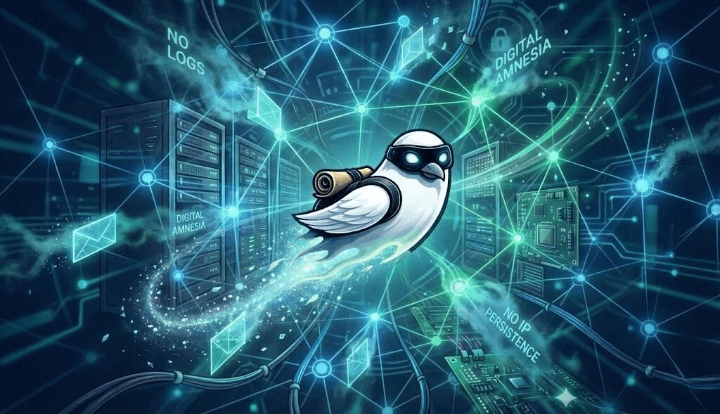

Stateless Edge Routing
Traffic moves through a distributed edge network designed for digital amnesia. No transaction logs, no IP persistence, and no central record of communication flow.
A privacy-first communication tool designed for hostile environments: Tor routing, anti-forensics, plausible deniability, zero-log relay.
“Trust no one. Encrypt everything.”
QUANTUM P1NG operates beyond the scope of a standard messenger. It is a digital survival instrument engineered for communication in hostile network environments, designed for journalists, activists, researchers, and anyone who must protect identity, sources, and conversations under surveillance, censorship, or repression.
Traffic moves through a distributed edge network designed for digital amnesia. No transaction logs, no IP persistence, and no central record of communication flow.
Payloads are transient events, not static records. Auto-shredding protocols ensure delivery is followed by immediate decay. Data at rest is a liability: eliminate it.
We reject legacy identifiers. No phone numbers. No SIM binding. Your identity is a locally generated cryptographic ghost, invisible to the global roster.
You are not a client endpoint; you are a sovereign ghost node. The architecture assumes the network is compromised. Operate offline via BLE Mesh / NFC, store nothing in the cloud, and leave zero digital exhaust.
Under the hood of Quantum P1NG. A stack built for zero-trust environments, stripping away bloat to leave only hardened defense mechanisms.
Defense depth strategy. The architecture implements three concentric rings of protection to separate identity, transport, and storage.
Traffic is tunneled through the Tor network to decouple physical location (IP) from digital identity. Resistant to traffic analysis and censorship.
Asymmetric handshake (X3DH) + Symmetric Ratchet. The relay server sees only [ciphertext] and opaque routing headers. Zero knowledge architecture.
Memory scrubbing, database encryption at rest (SQLCipher), and operational "decay" routines designed to reduce recoverable traces on seizure.
http://quantump1ngRelayV2.onion
The system supports a Panic / Duress Trigger (e.g., specific PIN entry).
Executing this protocol triggers a dual-stage wipe:
[1] LOCAL: Immediate crypto-shredding of keys and DB.
[2] REMOTE: A kill-signal is sent to the relay to purge your inbox.
Our infrastructure operates on volatile memory with zero logs. Once executed, data recovery is mathematically impossible.
The website mirrors the in-app SYSTEM_KERNEL_INFO panel: features, warnings, and operational assumptions in one place.
Offline identity exchange concept: devices touch in the physical world. No internet transit, no server-side identity roster.
Proximity discovery concept (Wi-Fi Aware style): detect allied nodes nearby without joining a hotspot.
Hardware sensors mapped to emergency defense behaviors: SHAKE → load Decoy Mode; FACE DOWN → emergency lock / black screen.
A cover surface that behaves like a normal utility app. Sensitive UI can remain dormant until a specific sequence is entered.
A believable decoy surface to buy time and reduce risk during casual inspection.
At-rest encryption: database files look like high entropy noise without the correct key material.
Prefer platform keystore / TEE-backed storage where possible. Assume seized devices; plan accordingly.
Traffic routing can be layered (Tor + edge indirection) to avoid a stable origin signal.
Application-layer cryptographic tokens can harden relay interaction against naive scraping and protocol confusion.
PIN 1111 → Access Chat
PIN 0000 → Decoy Mode
Panic PIN → Safety protocol
Threat models differ. A tool is only as secure as its configuration.
Define your adversary: ISP Logging? Device Seizure? Coercion?
Deploy countermeasures accordingly.
# 1. INITIATING CLONE SEQUENCE...
$ git clone https://github.com/zonkeynet/Quantum-P1NG.git
# 2. MOUNTING PROJECT DIRECTORY
$ cd Quantum-P1NG
# 3. COMPILING DEBUG BINARY (NO_SIGN_KEY)
$ ./gradlew assembleDebug
# 4. DEPLOYING VIA ADB BRIDGE
$ adb install -r app/build/outputs/apk/debug/app-debug.apk
Cryptographic primitives established (X3DH + Double Ratchet). Tor Proxy integration (Orbot) and SQLCipher storage vault operational.
Implementation of "Identity Decoupling" (No Phone/Email). Deployment of Scorched Earth protocol (Panic Trigger) and message decay timers.
Bridging physical distance without internet. Active integration of Wi-Fi Aware (NAN) and BLE for proximity handshakes and side-channel comms.
Advanced Traffic Shaping to defeat Deep Packet Inspection (DPI). Making P1NG traffic look like random noise or standard HTTPS streams.